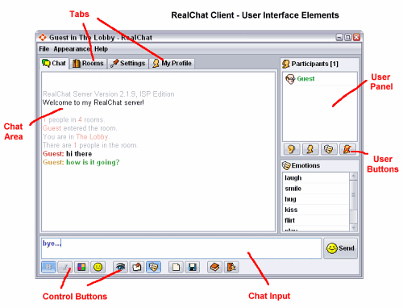

General Information
You can see what other people are saying in the main chat window. Below the main chat window, there is a line where you can type what you want to say in the room. Press the Enter key, on the keyboard, or click the Send button to send what you have typed on the line.

User Interface Buttons
Font StylesControl the way other users see the style, such as bold or italic, of any text you type.
ColorsOpens a new window when this button is clicked, allowing you to choose different colors for your nickname and the text you type.
ImagesOpens a window that displays several pictures. Underneath each picture, you will see a code (// followed by a number). If this code is typed into the main chat area or in a private message and followed by a space, the code is replaced by the image that the code related to. You can also click any of the pictures.
Who, WhereLists all users on the system and what rooms they are in.
AwaySets you in the Away state when you click the button. A message broadcasts, saying that you are away for awhile. Clicking this button again will set you in the Back state. A message broadcasts, saying that you are back again.
ClearClears the chat window.
SaveProvides a way for you to save the text of the chat session.
HelpBrings up this help window.
LogoutExits the chat session.
IgnoreAllows you to ignore another user. Select the nickname of the person whom you wish to ignore and click the Ignore button. The person's nickname will appear in plain text, instead of the default bold style. This means that you will not see any messages from that person. Clicking Ignore a second time allows you to receive messages from the person again.
Private MessageClick the nickname of the person you wish to send a private message to. Then click the PM button. A new window will open. Typing into the text area of this window will send text that only that particular user will see. Clicking the Profile tab in this window will toggle the showing of the person's user details. Double-clicking the user's nickname will also activate this function.
User ProfileClick the nickname of the person you wish to view their user information. Then click the Profile button. A new window will open containing the person's details.
Emotions & Emote UserPressing this button creates a new list to the bottom of the nicknames list in the chat window. You will see a list of actions that you may perform on yourself (by double clicking the emotion) or on another user (by clicking the emotion, the person's nickname and then Emote User button). Clicking the Emotions button again will remove the emotions list.
Tip: You can create your own custom emotion by starting anything you type with a colon ( : ) character.
User Interface Tabs
Chat TabThis tab contains the main window where chat messages appear.
Rooms TabYou can chat in various rooms on RealChat. Each room has a particular topic or genre that you may wish to chat about. The Rooms Tab displays a list of all available rooms followed by the subject of that room and the number of users in there. Simply select the room you wish to join and click Change Room. Users are also permitted to create their own custom rooms. You can create your own room by clicking New Room, typing the room Name & Topic in the text areas, and then clicking OK. Optionally, you can also enter a password to allow only selected people to enter. Note that user rooms that others have created that require a password to enter appear as ## 101 ##, ## 102 ##, ## 103 ##, and so forth. To enter one of these rooms, you will need to know the password that the person specified when they created the room.
Settings TabFrom this tab, you can specify various options on how the chat room looks, feels, and sounds. Please note that any changes you make here apply only to you; the changes do not affect the way others see any text you may type.
Profile TabFrom this tab, you can add or update information about yourself that you want to share with others. Clicking the Apply button will announce your profile to the chat server and will, on some browsers, save the information so that you won't need to enter it again the next time that you log in. Note that your chat administrator can disable this feature.
Extra Useful Information
Clickable LinksYou may type a link such as http://realchat.com/ or www.yahoo.com in the chat room. Any text like this will be converted into a clickable link with a style used by most web browsers. Any user that clicks the text with the mouse will open a new browser window and display the URL.
Chat CommandsThe chat client also supports some extra IRC-like commands:
Font and Color Codes
/date or /time - Tells you the time on the server you use.
/clear - Clears all text in the chat window.
/who - Gives you a list of all users on the system and what rooms they are in.
/me {action text} - Create your own custom emotion.
/whois {nickname} - Shows details about someone.
/msg {nickname} {message} - Sends a private message to this user without opening a private window.
/join {room} or /goto {room} - Join a specified room.
/ping - Pings the server and prints out the round trip.
/echo {line} - Simply displays the line without sending it to server.
/away, /back - Performs the same action as the away button.
You can create multi colored messages by using special codes. Typing these codes in the chat room will change the color and style of any text that follows the codes. The following codes can be used:
`0 - Plain text no italics, no bold
`1 - Bold text, no italics
`2 - Italic text, no bold
`3 - Bold text, italic
`a - Black
`b - Red
`c - Orange
`d - Light orange
`e - Yellow
`f - Light green
`g - Green
`h - Dark green
`i - Light gray
`j - Purple
`k - Pink
`l - Light pink
`m - Cyan
`n - Light blue
`o - Blue
`p - Dark blueNote: The ` character used in these codes is usually obtained by pressing the key underneath ESC, on the keyboard, and to the left of 1.
For example, typing the following text into the chat room:
`1`4Hello `fmy `3`bname `0`cis `3`gJ`do`kh`nn. `o`0How are you today?
Will look like this:
Browser and Java support
RealChat Client is a Java applet that can be accessed with any Java-enabled browser, such as Internet Explorer, Opera, Safari, Mozilla, Netscape Communicator 6 and higher. For the best experience, we recommend that you upgrade to the latest browser version available.
For the best experience, we strongly recommend that you get the latest version of Sun's Java plug-in. Microsoft's obsolete Java implementations are *not* 100% Java-compatible and may cause connection problems and lock-ups. Sun Microsystems is the creator of Java, and their free plug-in will let you enjoy the best of RealChat, and other Java applications as well!
Get Sun Java 2 Plug-in!